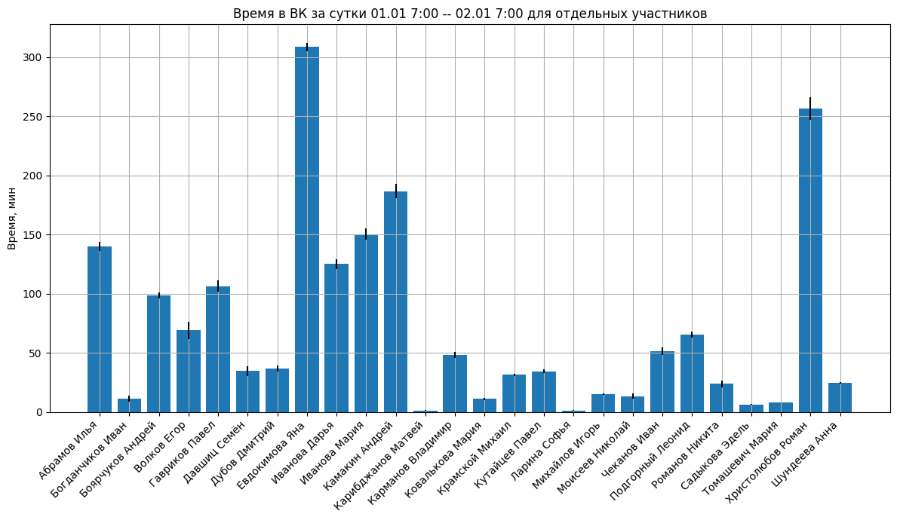
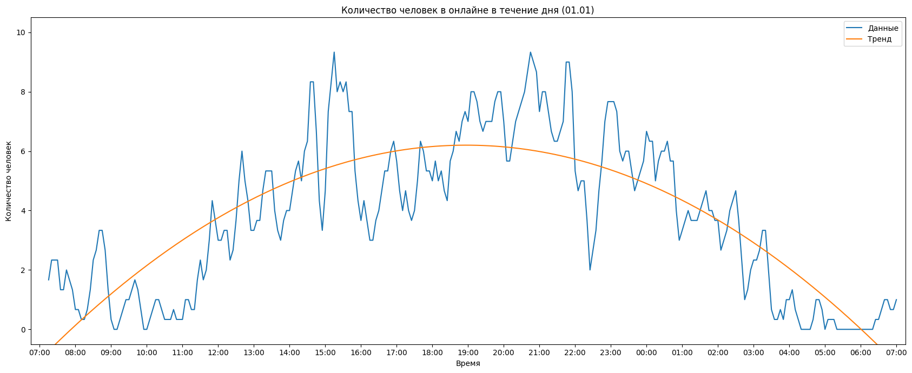
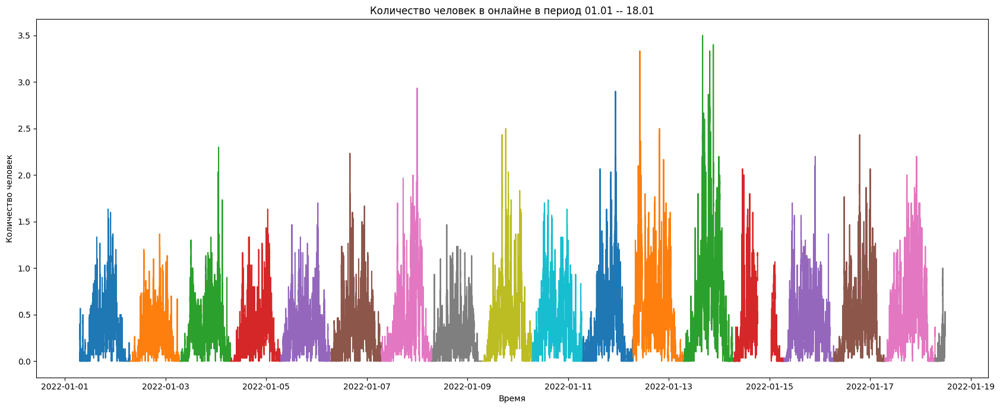
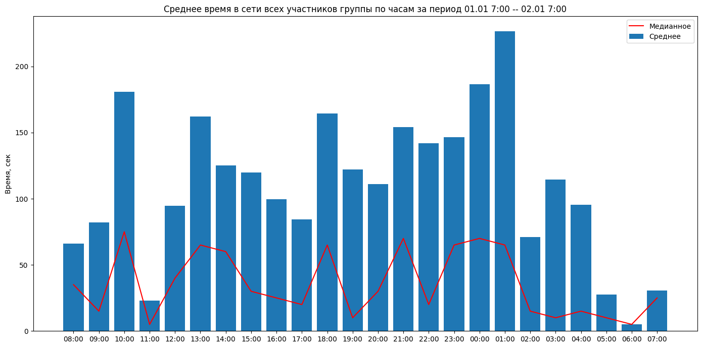
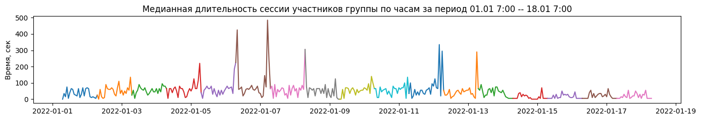

Одним декабрьским утром я проснулся, зашел в ВК и в очередной раз обнаружил, что мои одногруппники активно переписывались в 2 часа ночи. Меня это в очередной раз очень удивило, и я решил понаблюдать, когда кто уходит спать. Расчёт был прост: зачастую люди проверяют телефон уже в постели, так что, отслеживая онлайн-активность человека, можно понять, когда он просыпается и засыпает.
К великому сожалению, я так и не придумал простого алгоритма для определения начала и конца сна. Ведь одни засыпают в 23:00 и просыпаются в 6:00, а другие только засыпают в 7 утра. Конечно, можно разметить данные руками, тем более они уже есть в графическом виде. Но мне уже лень, да и получившиеся графики сами по себе довольно информативны.
Вообще, в планах было исследовать активность в течение целого месяца. Но произошло это:
Суммарное время в сети

Тут просто просуммировано время в сети за одни сутки для каждого участника.
Чёрные полоски обозначают погрешность измерений. Дело в том, что я опрашивал сервер раз в 5 секунд, данные для отдельного участника приходили в виде ... 0 0 1 1 1 1 1 1 0 .... Когда я в последний раз получаю 1, я не знаю, вышел человек из сети тут же, или был «до последнего». Когда таких последних единичек больше сотни за день — набегает некоторая погрешность.
На самом деле, этот алгоритм был реализован, когда данные собирались раз в 30 секунд. Вот там набегала большая погрешность. Здесь же, как видно по графику, всё не так страшно.
Время в сети по дням

А здесь уже сводный график. На нём показано, как человек пользовался ВКонтакте в течение 18 дней исследования. Не буду описывать, как расшифровать эти BoxPlot’ы, а лучше покажу картинку:
Количество людей в сети по часам

Здесь я делал выборки по 5 минут, потому что, если честно, одновременно в сети было мало человек, а вот в течение 5 минут уже набиралось некоторое весомое число. То есть человек помечался как онлайн, если он хотя бы раз был в сети за 5 минут.
Ну и красивая линия тренда в комплекте.
Количество людей в сети по часам за все дни

То же самое, только за всё время исследования. Не особо информативно, но некоторая динамика заметна: после каникул в ВК стали заходить чаще, но сессии стали короче (это будет понятно из графика медиан за все дни).
Сравнение медианной и средней продолжительности сессии

Медиана – это число, которое находится в середине этого набора, если его упорядочить по возрастанию, то есть такое число, что половина из элементов набора не меньше него, а другая половина не больше.
Среднее – это число, равное сумме всех чисел множества, делённой на их количество.
Вооружившись этими определениями, можно понять почему средняя продолжительность сессии отличается от медианной.
Зачастую люди заходят в ВК чтобы проверить сообщения или быстро ответить на что-то. Однако некоторые участники исследования долго листали мемы, поэтому среднее время увеличивалось. А медианное оставалось маленьким, потому что чаще всё же проверяли сообщения, а не листали мемы 🤝
Медианная продолжительность одной сессии

На этом графике показана медианная продолжительность онлайн-сессий для всех участников исследования по часам. 06 января можно заметить огромные всплески. Можно заметить, что все крупные аномалии появлялись в утренние часы, в период 03:00 – 07:00. Скорее всего, в то время в сети были 1 – 2 человека, которые листали мемы, поэтому фиксировалась очень длинная сессия и медианное значение сильно возрастало.
Как бы то ни было, довольно интересно наблюдать, как на новогодних каникулах онлайн сначала растёт, а затем, ближе к началу работы — падает.
Самые большие графики
На этих огромных листах показана активность каждого отдельного человека в течение отдельного дня. Чем краснее цвет — тем длиннее непрерывная (или почти непрерывная) сессия во ВКонтакте. Важно отметить, что линия становится по-настоящему красной примерно через 40 минут непрерывной активности в сети. Заставляет задуматься. А ещё было бы интересно посмотреть на такие же графики пользователей тиктока.